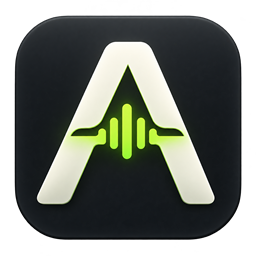
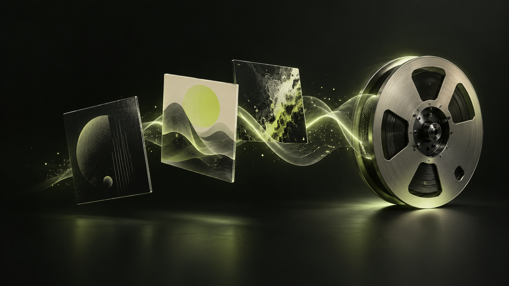

0.3.9 beta
Windows
Windows 11 · x64
Install for your account, or run it portable.

AssetRaiderA player for your Udio and Suno collection. Browse the artwork, find your tracks, and record the ones you love as local WAV files.

New: your library, in full colour. Larger artwork. List or grid. Track dates, Suno versions and copyable prompts.
Release notes ↗Public beta · Updated 12 October 2026
The .NET runtime is included. Google Chrome is required.
Windows 11 · x64
Install for your account, or run it portable.
macOS 14 Sonoma or newer
Choose Apple Silicon or Intel.
x86-64 · Ubuntu 22.04+ or comparable
PulseAudio or PipeWire-Pulse.
Close AssetRaider before updating. Your recordings and sign-ins are retained. Mac/Linux setup and permissions ↗
A clearer view of your collection, with playback close at hand.
Switch between a compact list and an artwork grid. Choose Small, Medium or Large covers without stretching them. Search by name, sort by song, length or status, and toggle every visible track from the selection header.
See creation dates, release dates when supplied, and Suno’s model version. Open the full prompt to read and copy the style, lyrics or generation instructions, and excluded styles. Missing release dates stay blank rather than being guessed.
Play, pause, seek, skip, shuffle and repeat from the app while Chrome stays minimized. Buffering feedback and a live audio spectrum show what’s happening. Playing a track stops a scan and keeps the results already found.
No browser extension.
No separate .NET installation.
Choose your platform above. Open AssetRaider and select Udio or Suno.
Click “Sign in (normal Chrome)”. Sign in in the separate window, then close that window when finished.
Open library / filters, choose your view, then Scan library. “Find in library” searches Suno directly. Select tracks, choose a save folder, and click “Record selected as WAV”. Keep the app’s Chrome window open and your computer awake.
48 kHz / 16-bit stereo WAV, about 11 MB per minute. Recordings happen at normal playback speed. See source codec, approximate bitrate, sample rate and channels when Chrome exposes them; unavailable fields are omitted. WAV conversion does not improve compressed source audio or recover original masters.
Separate local Chrome sign-ins. No AssetRaider account, analytics or cloud upload. Audio comes from the dedicated browser, not your microphone. Completed recordings are remembered; “Record again (new copy)” preserves the existing files.
Pause and resume scanning, filter tracks as they arrive, or clear the list without deleting recordings. Select all and recording apply to the visible matches. Linux recording uses a separate silent audio channel; preview playback goes to your speakers.
Windows installer, source-quality and interface checks pass. Native Mac builds and launch checks pass; Linux also passes audio-capture and interface checks. Interactive Mac recording and full signed-in queues on Mac/Linux still need testing. See the build checks ↗
Free to use. Open to improve.